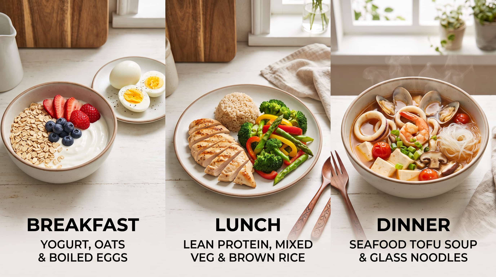

坦白說，身為女性，我很能體會那種兩手一插腰，突然意識到「怎麼今天好像比較粗？」的瞬間。或者感覺脹氣、腹部鼓鼓的，就開始懷疑自己是不是變胖了？（當然，這有時也可能是心虛的表現😆，通常發生在連續假期、運動減少、聚餐變多的時候。）
先別被肚子脹這件事影響心情——發生在一瞬間、或短短幾天之內的「變粗」，通常不是真正的變胖。
為什麼大腦會先想到「變胖」？
我們之所以一覺得肚子變大就懷疑變胖，其實是很自然的反應。因為腹脹（氣體、水分、消化中的內容物體積）和脂肪增加，在體感上是同一種感覺：腹壓上升、腰圍變緊、衣服變勒。
大腦收到的訊號只有「腹部擴張」，它無法直接分辨這是氣體膨脹還是脂肪囤積。
於是大腦需要動用我們既有的認知架構去「腦補」一個解釋。對體態有持續關注的人，這時候就會馬上幫自己診斷：「該不會是變胖了？」；而對一個不太在意體態、比較重視腸胃保養的人，同樣的脹感可能會被解讀成「是不是吃了什麼容易脹氣的食物？」
說明到這裡就客觀多了：這些都是可能的原因，只是每個人心中的優先順序不同。有些人覺得「變胖」是更嚴重的事，所以那個解釋會優先跳出來——這反映的是我們各自在乎什麼，而不是身體真正的狀態。
回到我自己身上：一次連假後的實況分析
我自己通常先是情緒性地緊張一下：「會不會變胖了？」接著才理性地回溯：過去幾天吃了什麼？真的有多吃嗎？還是吃到了容易過敏、脹氣的東西？
這麼一想就清楚了。前幾天中秋連假——
🥮 飲食：聚餐多、醣量和調味都比平常高
聚餐變多、家裡囤了糕餅和柚子，每天不知不覺都多吃了一些。即使總份量沒有明顯變多，但醣類會以肝醣形式儲存，而每 1 克肝醣大約會連帶抓住 3 克水分，所以高醣飲食後體重計上的數字上升，多半是水分，不是脂肪。調味變重（鈉攝取變高）也會讓身體留住更多水分。
🚶 活動：步數還在，但運動模式變了
我雖然依舊日行萬步，但平常有規律的有氧課程教學，平均每天兩堂課、流很多汗；放假沒排課，只做了點自主重量訓練，少了幾天的大量出汗。這也會影響體重和體感的呈現。
🩸 生理期：荷爾蒙讓身體留住水分
那幾天剛好遇上生理期。荷爾蒙波動本來就會讓子宮周圍充血、組織留住水分，產生明顯的水腫感——這是正常的生理現象，不是身體失控。
高醣飲食、鈉含量偏高、運動模式改變、生理期——全部都在同一段時間內撞在一起。這種時候體重計上的數字可能會微幅上升，不是因為你做錯了什麼，而是身體還在「修復模式」裡面，還沒有餘裕好好回到平常的狀態。
一路分析下來，原因的方向大概清楚了，總算鬆了口氣——原來如此，不是變胖，是身體在留水啊。
知道，不等於做到
有趣的是，我經常遇到學員覺得體態管理困難、飲食控制有挑戰。追根究柢，往往是他們在做出一番精湛的自我分析之後，大腦就以為「問題已經解決了」，然後沒有任何實質作為。狀態日復一日累積下去，原本只是短暫的腹脹和水腫，有一天就真的變成實實在在的肚肚肉。
分析是讓你知道該做什麼，做，才會讓身體真的改變。
怎麼來的，就怎麼回去
如果是吃多了、吃太重口味、醣類比例太高，那就把失衡的結構調回來。給自己一份「消腫菜單」，以週為單位執行個兩三輪，身體通常很快就能回到原形。
原則很簡單：回到均衡，而不是懲罰性節食。
🍳 早餐：優格燕麥＋水煮蛋
無糖優格拌即食燕麥一碗，搭配水煮蛋 1-2 顆，可加一份水果。
🍱 午餐：低脂蛋白質＋綜合蔬菜＋半碗飯
低脂蛋白質比如瘦肉片、蒸魚、雞腿雞胸或豆腐，提高蔬菜比例增加飽足感，飯量減半。
🍲 晚餐：海鮮豆腐清湯
花枝、蝦仁、蛤蜊、豆腐，善用蔬菜天然鮮甜像是番茄、蘿蔔、洋蔥或菇類煮成一鍋湯，配一綑冬粉/半碗飯，或是蒸小條地瓜。

🍎 點心（真的餓才吃）
| 選項 | 份量與說明 |
|---|---|
| 無糖優格 | 一杯，可加少量藍莓或半根香蕉 |
| 芭樂、奇異果 | 一份約一個拳頭大，鉀離子有助水分平衡 |
| 原味堅果 | 一小把約 10 顆，選無調味的 |
| 水煮蛋 | 一顆，經濟實惠的蛋白質 |
✅ 這一週的叮嚀
| 項目 | 說明 |
|---|---|
| 水分照常喝足 | 水喝不夠時，身體反而更用力留住水 |
| 蛋白質吃夠 | 體重每公斤約 1.2–1.6 克；蛋白質不足，水分平衡也有障礙 |
| 減少調味＆加工品 | 鈉的來源未必都來自鹽，不可小看加工品的鈉量——超商鮮食、烘焙食品、火腿香腸貢丸、沾醬湯汁，能減盡量減 |
| 飯後散步 10–15 分鐘 | 幫助消化，也幫自己從「脹的感覺」切換到「我在照顧身體」的行動 |
| 不節食、不懲罰 | 這是回歸均衡，不是斷食贖罪——越餓、越有壓力，身體越用力留水 |
最後提醒
短期腹脹是水、是氣、是內容物，一兩週就會代謝掉；真正的脂肪增減是以「週」為單位的能量結餘，不會在一頓大餐或一次生理期後定型。所以不必為短暫的腹脹感焦慮，但也別讓「分析完就沒事」的大腦騙你——知道原因之後，身體需要你用行動帶它找回平衡。
而如果腹脹是長期、反覆、越來越嚴重，那可能代表腸胃需要專業評估。特別是若伴隨體重莫名下降、持續腹痛，或是排便異常與出血，這就超出了飲食調整的範疇，務必尋求醫師專業檢查，把潛在風險排除掉。
體態管理很多時候不是「努力不夠」的問題，而是時間點對不對、身體狀態對不對。懂得在這種時候判斷「現在發生什麼事」，然後給出對的策略，比一直往前衝還要有效。